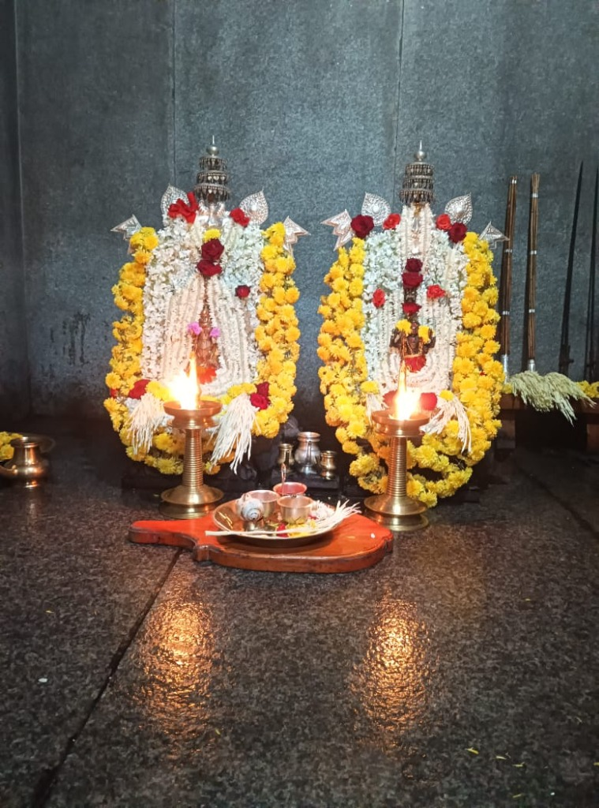
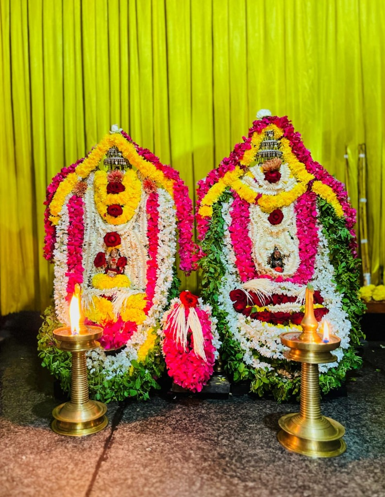
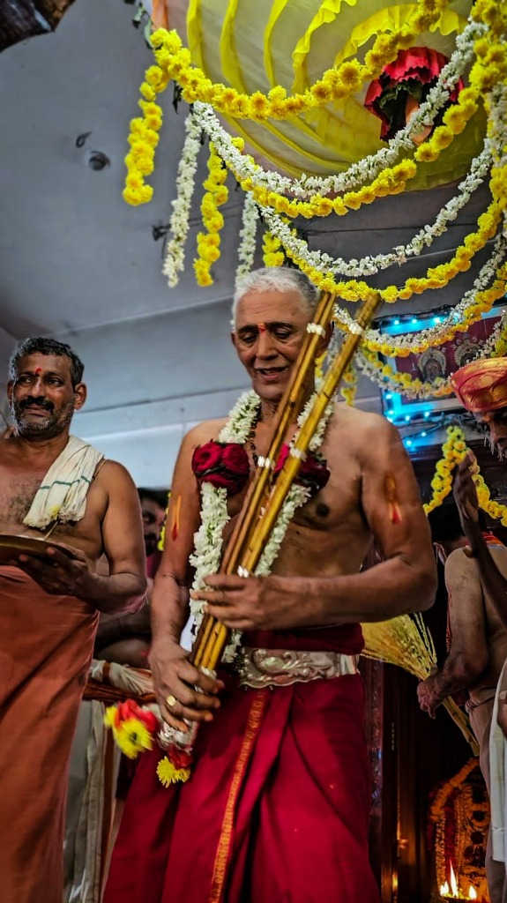

ॐ शक्ति — Kattekal · Kasargod
Kattekal, Kasargod District, Kerala
"Sarva Mangala Maangalye Shive Sarvartha Sadhike
Sharanye Trayambike Gauri Narayani Namostute"
Our Sacred Heritage
The Sri Dhurgaparameshwari Kalabhirava Temple at Kattekal, Kasargod, is a revered seat of divine power nestled in the lush coastal heartland of northern Kerala. Dedicated to the fierce yet compassionate Goddess Dhurgaparameshwari and Lord Kalabhirava, the temple has been a beacon of devotion for countless generations.
Goddess Dhurgaparameshwari — a form of Shakti widely worshipped across the Tulu Nadu and northern Kerala region — is believed to protect devotees from evil, bestow strength, and fulfil sincere prayers. Lord Kalabhirava, the guardian aspect of Shiva, presides over time, justice, and liberation.
The temple follows the Kerala–Tulu Nadu traditions of worship, blending the rich spiritual heritage of both cultures in its rituals, festivals, and customs. Pilgrims from across Kerala, Karnataka, and beyond travel to Kattekal to seek the blessings of the presiding deities.
Daily Schedule
* Timings may vary on festival days and special occasions. Please contact the temple office for updated schedules.
Sacred Calendar
Darshan
A visual journey through the temple's sacred spaces and festivals.

Main Sanctum
Floral Decorations
Navaratri CelebrationsArpana — Offering
Your generous contributions help maintain the daily rituals, preserve the temple's sacred heritage, support the priests, organise festivals, and ensure free prasad distribution to all devotees. Every rupee is an offering at the feet of the Mother Goddess.
Donations can also be made in person at the temple office during darshan hours.
Reach Us